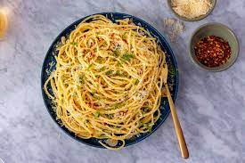
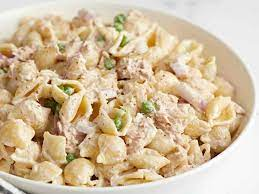

Pasta Aglio e Olio
Ingredients:
- Spaghetti
- Olive oil
- Garlic, thinly sliced
- Red pepper flakes (optional)
- Parsley, chopped
- Grated Parmesan cheese
- Salt and pepper, to taste
Instructions:
- Cook spaghetti according to package instructions.
- In a skillet, heat olive oil over medium heat. Add sliced garlic and red pepper flakes (if using). Cook until garlic is golden.
- Toss cooked pasta with the garlic oil. Season with salt and pepper.
- Garnish with chopped parsley and grated Parmesan cheese before serving.
Bean and Rice Burritos
Ingredients:
- Cooked rice
- Canned black beans, drained and rinsed
- Salsa
- Tortillas
- Shredded cheese
- Sour cream (optional)
Instructions:
- BWarm tortillas in a dry skillet.
- Layer cooked rice, black beans, salsa, and shredded cheese on each tortilla.
- Roll up the tortillas into burritos.
- Heat the burritos in the skillet until the cheese melts.
- Serve with sour cream if desired.
Egg Fried Rice
Ingredients:
- Cooked rice, chilled
- Eggs, beaten
- Frozen mixed vegetables, thawed
- Soy sauce
- Green onions, chopped
Instructions:
- In a pan, scramble the beaten eggs until cooked through. Remove from the pan.
- Add chilled rice and thawed mixed vegetables to the pan. Stir-fry until heated through.
- Pour soy sauce over the rice and vegetables. Stir to combine.
- Add scrambled eggs back into the pan and mix well.
- Garnish with chopped green onions before serving.
Tomato and Chickpea Soup
Ingredients:
- Canned chickpeas, drained and rinsed
- Canned diced tomatoes
- Vegetable broth
- Onion, chopped
- Garlic, minced
- Olive oil
- Seasonings (such as paprika, cumin, salt, and pepper)
Instructions:
- In a pot, sauté chopped onion and minced garlic in olive oil until translucent.
- Add canned chickpeas, diced tomatoes, and vegetable broth to the pot.
- Season with paprika, cumin, salt, and pepper.
- Simmer the soup for about 15-20 minutes until flavors meld together.
- Serve hot.

Tuna Pasta Salad
Ingredients:
- Pasta
- Canned tuna, drained
- Frozen peas, thawed
- Mayonnaise
- Dijon mustard
- Salt and pepper, to taste
Instructions:
- Cook pasta according to package instructions. Drain and let it cool.
- In a bowl, mix together pasta, drained tuna, thawed peas, mayonnaise, and Dijon mustard.
- Season with salt and pepper.
- Chill in the refrigerator before serving.